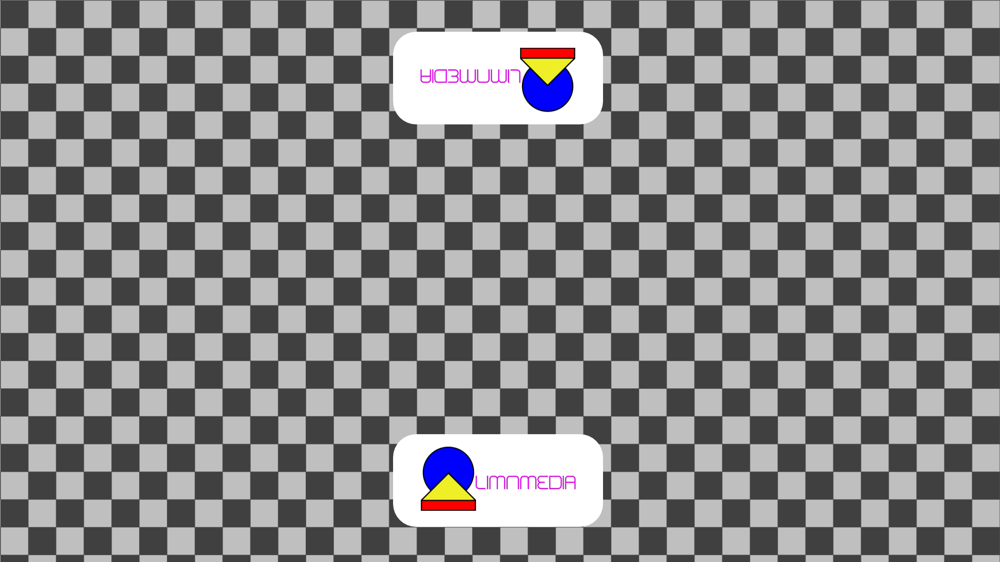

Nodal Zero Viewer: Adjust Z Offset to pan without parallax.

Pan Rotation (Y):
0
°
Z Offset:
0
mm
Switch to Witness Camera
Send to Standard Position
Send to Nodal Zero (Calibrated)
© LIMNMEDIA 2025
Nodal Zero Viewer
is an educational tool by
LIMNMEDIA
Visualize parallax and camera Z-offset — because seeing is understanding.